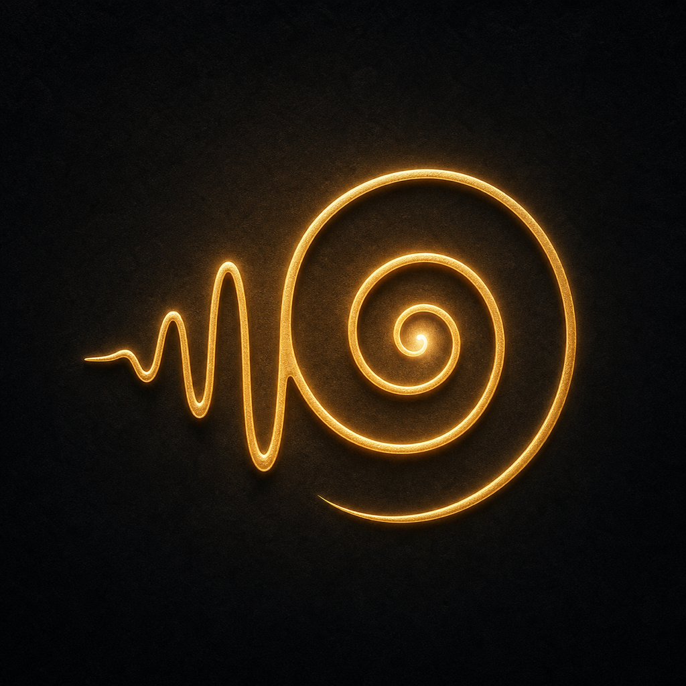
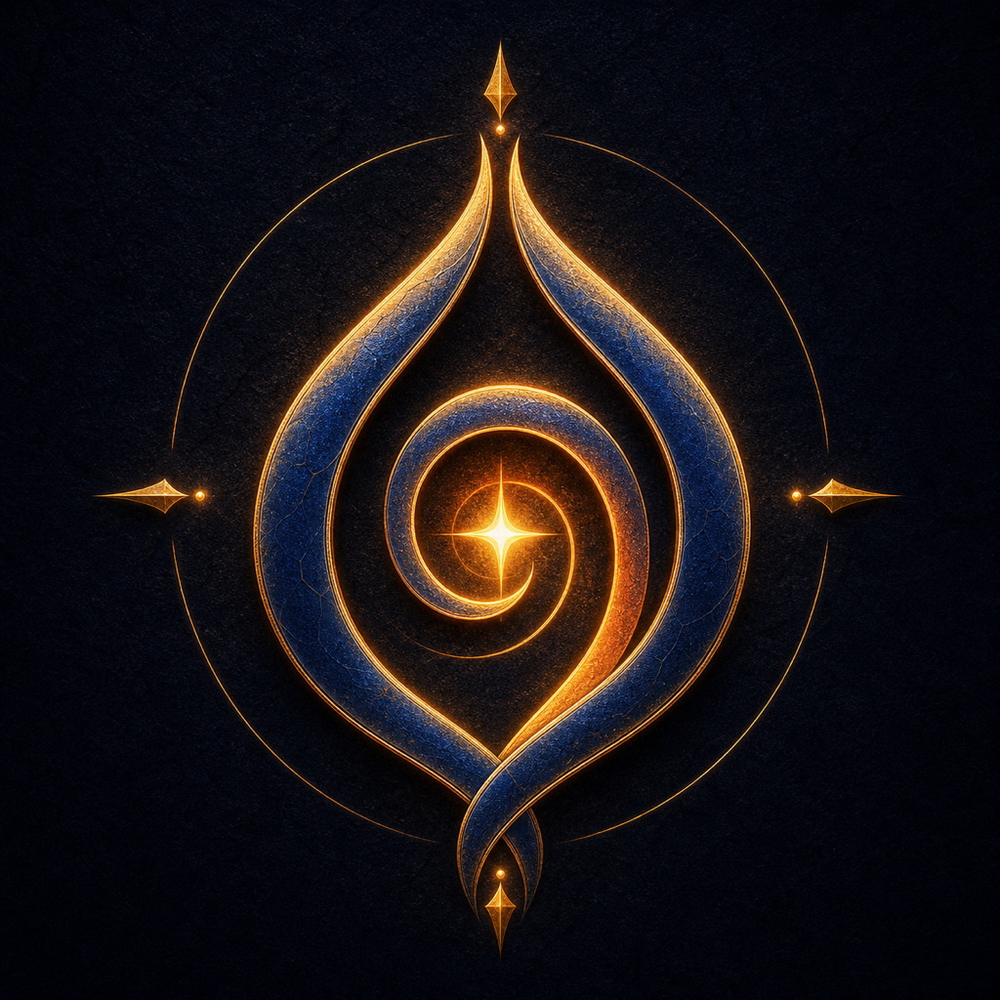
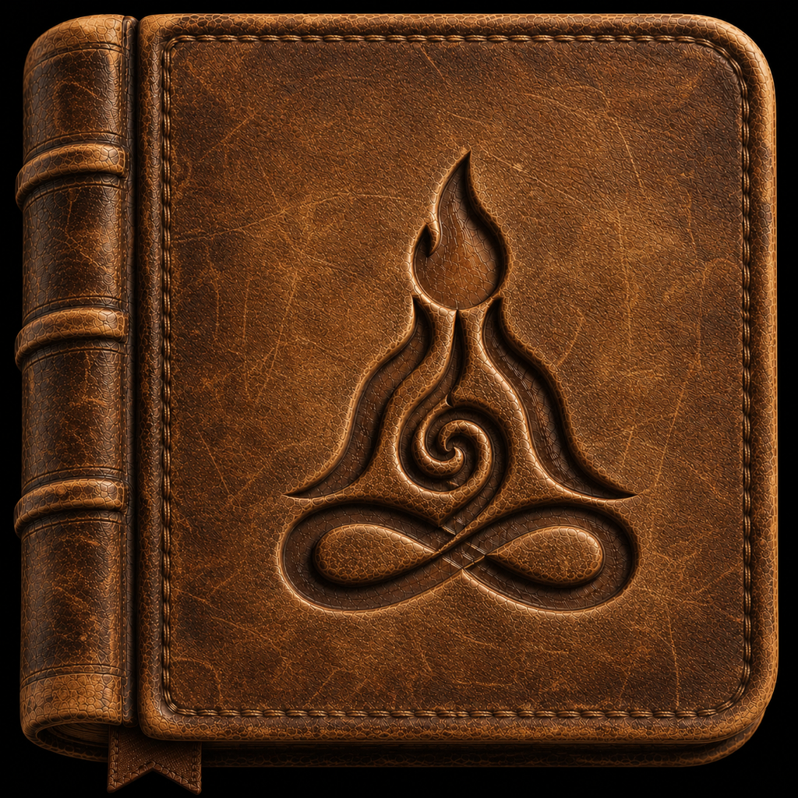

Apps voor de ruimte vanbinnen.
Vijf verschillende deuren. Eén bedoeling: ruimte maken voor iets wat waar is.
In alle rust gemaakt. Met zorg gemaakt. Voor het echte leven gemaakt.
Moving Truth-apps zijn geen eindeloze feeds die om je aandacht strijden. Elke app opent een andere innerlijke ruimte: voor een woord, een gedachte, een duiding, een vraag waarbij het de moeite waard is stil te staan, of gewoon iets voor je handen.
Geen enkele app probeert alles te zijn. Samen beginnen ze een plek te vormen.
Waar heb je ruimte voor nodig?
Begin met de app die aansluit bij het moment waarin je je al bevindt.
Inner Whisper
Een rustige ruimte voor woorden die jou vinden.
Eén citaat, zacht in het ritme van je dag gelegd. Geen feed. Geen lijst. Een fluistering.
Ga naar Inner Whisper →
Inner Thought
Eén gebaar. Zeg wat er in je leeft. Bewaar het veilig.
Bewaar wat anders zou verdwijnen — gesproken, geschreven, gefotografeerd of gefilmd — zonder het tijdens het vastleggen al te moeten ordenen.
Ga naar Inner Thought →
Inner Sign
Zon, getal, dierenriem en maan — elke dag een nieuwe duiding.
Vier onafhankelijke tradities komen samen in één transparante dagelijkse duiding, met drie eerlijke manieren om de hemel te lezen.
Ga naar Inner Sign →
Inner Course
Waar Moving Truth naar buiten beweegt, gaat Inner Course naar binnen.
Lessen en reflectie, geen feed en geen citatenverzameling. Een metgezel voor vragen waarmee het de moeite waard is te leven.
Ga naar Inner Course →
Inner Play
Iets voor je handen. Ruimte voor je geest.
Een rustige kast vol tastbare digitale voorwerpen — draaischijven, schakelaars, schuifregelaars en bedieningen die reageren met geloofwaardige beweging, klank en haptiek.
Ga naar Inner Play →De mens voorop. Privacy in het ontwerp. Toegankelijk vanaf het begin.
Elke Moving Truth-app begint met dezelfde blijvende basis: menselijke waardigheid, ethische terughoudendheid, begrijpelijke privacy en technologie die de persoon dient die haar gebruikt. Schoonheid moet functies natuurlijk laten aanvoelen, niet verhullen.
- Toegankelijkheid is een voorwaarde voor elke uitgave. Elke app voor Apple-platforms wordt gedurende de volledige levensduur ontworpen en getest volgens de toepasselijke toegankelijkheidsrichtlijnen van Apple — nooit als aparte editie of laatste afwerkingsronde.
- Veertien talen, overal. Elke huidige en toekomstige Moving Truth-app begint met dezelfde architectuur voor veertien talen, zodat mensen overal ter wereld de volledige ervaring krijgen en niet slechts een vertaald fragment.
- Privacy en ethiek zitten in de structuur. Niemands innerlijke leven mag het product worden. Gegevensverzameling, toestemmingen, verdienmodellen, meldingen en nieuwe technologie moeten eerlijk, evenredig en onder menselijke controle blijven.
- iOS is onze referentie-uitvoering. Sommige apps krijgen ook een eigen Android-versie met dezelfde menselijke, ethische en taalkundige beloften en dezelfde inzet voor privacy en toegankelijkheid. Die wordt oprecht voor Android ontworpen, niet voorgesteld als een visueel identieke kopie: een deel van de diepte, materialiteit, beweging en systeemintegratie die op Apple-platforms mogelijk is, kan daar niet op precies dezelfde manier worden nagebootst.
Neem de deur die opengaat.
Sommige van deze apps zijn er al. Andere krijgen nog vorm. Elke app verschijnt als één volledig en zorgvuldig aanbod zodra ze klaar is.
Vraag naar de apps